Red only at night
Warm filters leave the green in. This switches blue and green off completely, leaving the one colour your body clock barely notices.
- Blue and green at exactly zero
- Dim the red as low as 30%
- Works on every connected display
A tiny Mac app that takes blue and green light out of your display at night, so your laptop stops telling your brain it is noon at 11 pm.
Drag the slider. This is what the app does to your whole screen.
Built for our own evenings at the NH Private Health Office.
Now it is yours.
Warm filters leave the green in. This switches blue and green off completely, leaving the one colour your body clock barely notices.
Amber at your sunset, red two hours before bed, a full bright screen again when you wake. Set it once and forget it.
Stop anywhere between unfiltered and red only. One shortcut brings true colours back the moment you need them.
See an estimate of the light your screen is sending out, and watch the blue peak disappear.
No account, no tracking, no network calls. Your location never leaves your Mac.
Open at login, sit quietly in the menu bar, and restore normal colour the moment you quit.
Five published studies. Tap any one to read it.
People sleeping under 6 hours were 4.2 times more likely to catch a cold than those sleeping over 7.
Immune system · Prather et al., Sleep, 2015 · 164 adultsOne night without sleep cut muscle building by 18% and testosterone by 24%.
Strength · Lamon et al., Physiological Reports, 2021 · 13 adultsOn the same diet, 5.5 instead of 8.5 hours in bed meant 55% less fat lost and 60% more muscle lost.
Fat loss · Nedeltcheva et al., Annals of Internal Medicine, 2010 · 10 adultsReading on a lit screen before bed lowered melatonin by 55% and shifted the body clock by more than an hour.
Energy · Chang et al., PNAS, 2015 · 12 adultsThe brightest nights went with a 30% higher risk of depression, the brightest days with a 20% lower one.
Mood · Burns et al., Nature Mental Health, 2023 · 86,772 adultsThese studies are about sleep and light in general, not about this app. Several are small lab studies, and the last one shows a link, not proof of cause.
I built this for my own evenings. The last light most of us see at night is a screen, and filters that only warm the colour never went far enough for me.
So I made one that takes the blue and green out completely. It has been on my Mac every night since. Now it is yours.
Nick Haasmann · Founder, NH Private Health Office
One download, one drag to Applications. It lives quietly in your menu bar.
Download for Mac